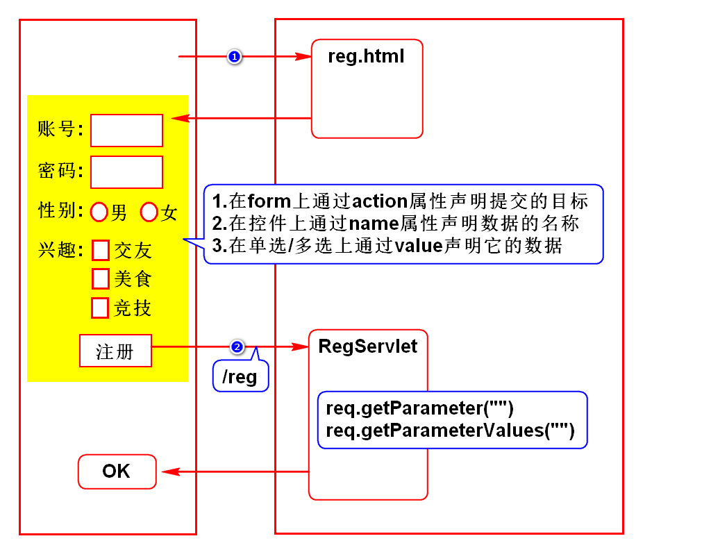

一.HTTP协议
1.什么是HTTP协议
- 超文本传输协议
- 就是W3C指定的规范
- 规定了浏览器和服务器怎么通信以及通信的数据格式
2.如何通信
- 建立连接
- 发送请求
- 返回响应
- 断开连接
特点:一次请求一次连接,降低服务器的压力
3.数据格式
3.1请求数据
- 请求行:请求的基础信息
- 消息头:业务数据的描述
- 实体内容:具体的业务数据
3.2响应数据
- 状态行:响应数据的基础信息
- 消息头:业务数据的描述
- 实体内容:具体的业务数据
4.对开发者的要求
4.1不需要我们做的事情
- 浏览器和服务器通信的过程已经由他们实现了
- 请求数据的打包(3部分)由浏览器实现了
- 响应数据的打包(3部分)由服务器实现了
4.2需要我们做的事情
- 请求及响应的业务数据由开发者提供
- 使用requst处理请求数据,使用response处理响应数据
学会使用request和response
二.注册案例

三.Servlet原理

四.请求方式
1.什么是请求方式
- 就是浏览器向服务器发送数据的方式
- 只需要掌握众多方式中的2种:GET和POST
2.GET
- 通过路径传参
- 参数在传递过程中可见,隐私性差
- 可以传少量数据
所有的请求默认都是GET请求
3.POST
- 采用实体内容传参
- 参数在传递过程中不可见,隐私性好
- 传递的数据大小不受限制
当form上增加了method="post"
4.如何选择
- 查询时用get,一般查询条件较少
- 保存、提交时用post，此时数据较多
5.可以通过浏览器观察请求方式
五.乱码解决方案

六.查询员工案例

补充
1.服务器常见问题
问题描述
- port 8080 are already in use
原因
解决方案1
- 重复启动tomcat导致其端口被占用
- 打开/tomcat/bin,手敲命令强制关闭它
解决方案2
- 其他软件占用了8080端口(如Oracle)
- 修改tomcat端口
- 打开Servers项目下server.xml,将65行8080修改
建议改为8088,8089